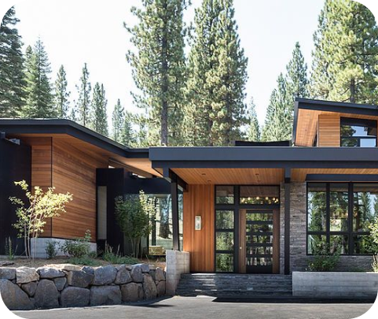

Rock Stad è un progetto che vuole coinvolgere e mettere in relazione le persone da tutto il mondo per volorizzare le particolarità del territorio montano. Si parla di una città sviluppata interamente nella roccia caratterizzata da una cultura e una storia locale in un ambiente dove si trovano una fauna e una flora ricche e variegate. La visita alla città suscita emozioni uniche che incuriosiscono e affascinano ogni visitatore in ogni stagione dell’anno. Il turista ideale non vive in maniera passiva il territorio, il quale oltre a vivere le esperienze offerte dai locali, contribuisce ad accrescere le stesse divenendo egli stesso protagonista.
Porta e scambia competenze, valori con il territorio e le sue risorse, in un rapporto armonico con la gente locale.Rock Stad mette in connessione il capitale umano, le risorse e i patrimoni materiali e immateriali con nuove persone, nuovi modi di fare, nuovi sguardi e idee per rigenerare il territorio. Fondamentale, per far sì che ciò avvenga, è una rinnovata attenzione politica capace di garantire servizi essenziali e infrastrutture materiali e immateriali, possibilità di accesso alle reti digitali, investimenti in formazione d'eccellenza e approcci multifunzionali così da risolvere carenze pregresse e asperità territoriali.

 Rockstad@gmail.com
Rockstad@gmail.com 0125670108
0125670108